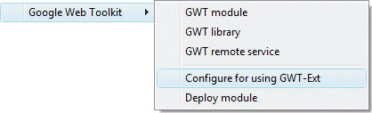
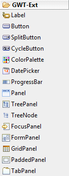
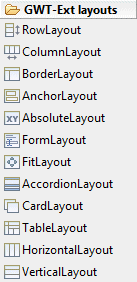
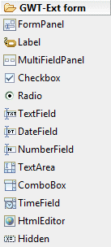
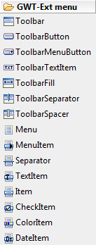
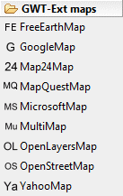

|
GWT-Ext is a powerful widget library that provides rich
widgets like Grid with sort, paging and filtering, Tree�s with
Drag & Drop support, highly customizable ComboBoxes, Tab Panels,
Menus & Toolbars, Dialogs, Forms and a lot more right out of the
box with a powerful and easy to use API. It uses GWT and Ext.
You can download the latest GWT-Ext update
here. To configure your project to use GWT-Ext, you can either follow the instructions on the GWT-Ext web site, or you can select your GWT module file and right-click to select the Google Web Toolkit > Configure for using GWT-Ext command. This will add the gwtext.jar to your classpath and module file and ext,js to your module folder.  |
Once GWT-Ext has been added to your project several new GWT-Ext palette categories will appear:      |
GWT-Ext includes a large number of widgets. See the GWT-Ext web site for more information about the individual widgets.
|